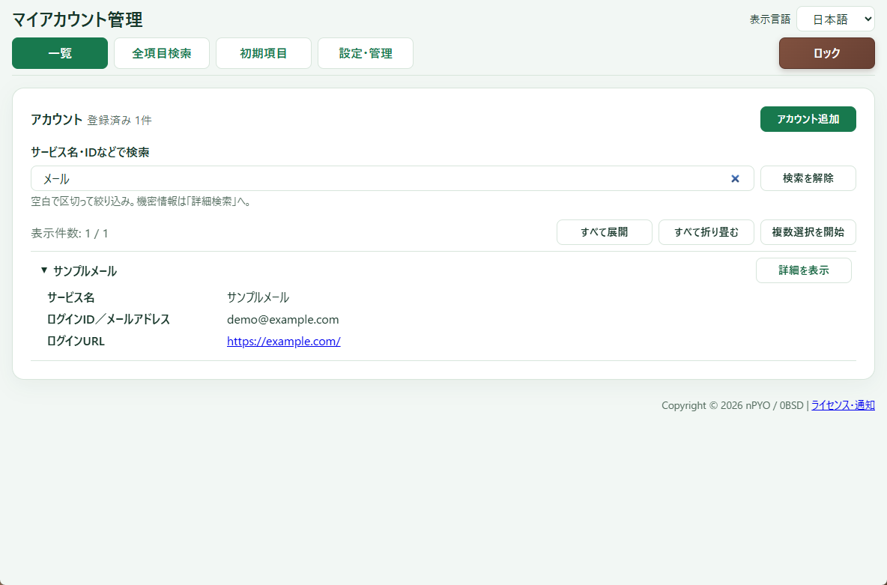
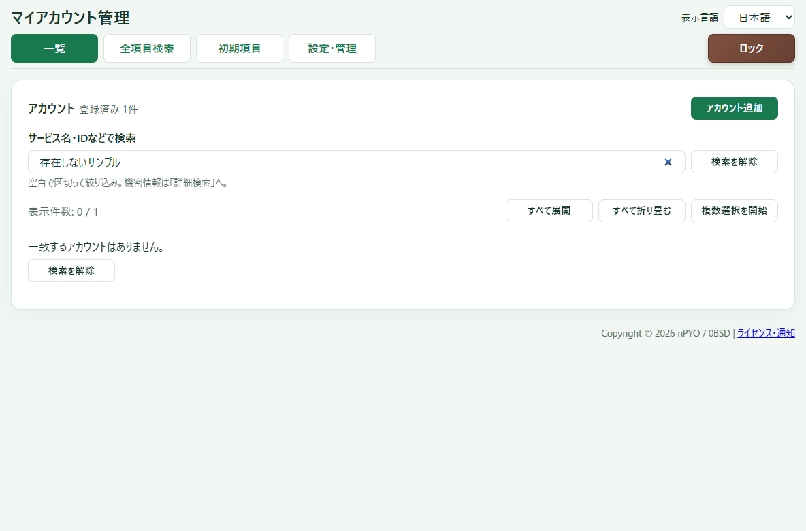
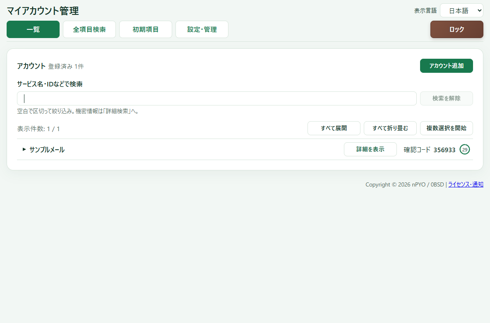

16一覧で検索
一覧の検索欄に文字を入れると、表示するアカウントを絞り込めます。
手順一覧を開く（4手順）
1一覧の検索欄を確認
「サービス名・IDなどで検索」に検索したい文字を入れます。

2一致するアカウントを見る
この例では「メール」を入力します。表示件数を確認します。

30件の場合は条件を見直す
「一致するアカウントはありません。」なら文字を修正するか［検索を解除］を押します。

4［検索を解除］で全件へ戻る
検索欄が空になり、登録済みアカウントが再表示されます。
